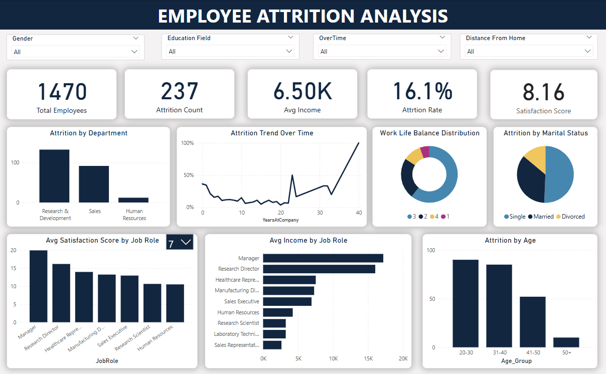
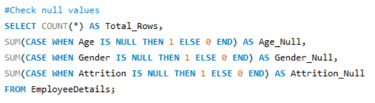

Employee Attrition Analysis Dashboard
SQL | Power BI

Designed a Power BI dashboard using MySQL data to analyze attrition trends across departments, roles, and demographics. Uncovered a 16.1% attrition rate and key insights to support HR decisions.
Here are the questions I was interested in answering:
1) Which departments have the highest attrition rates?
2) Are there trends in attrition over time?
3) Does work-life balance influence attrition?
4) How does marital status and gender impact attrition?
5) Which job roles have income or satisfaction disparities?
6) What is the satisfaction trend across departments?
7) Are certain age groups more likely to leave?
8) What is the overall attrition rate and average salary?
I took the following steps to create my analysis:
1) Data Understanding: Analyzed employee dataset with 30+ features covering demographics, job details, and satisfaction scores.
2) Database Setup: Imported and structured data in MySQL; cleaned field names and handled inconsistencies.
3) Data Cleaning: Removed duplicates, handled nulls, fixed data types, and grouped values (e.g., age groups).

.png)
.png)
.png)
6) DAX Measures: Created key metrics: Attrition Rate, Avg. Monthly Income, Satisfaction Index, and more.
7) Visualizations: Designed interactive dashboard with slicers, cards, bar/pie/line charts for insights across departments, roles, and demographics.
8) Advanced Insights: Added Attrition Trend Over Time, Work-Life Balance distribution, and role-based income gaps.
9) Design Optimization: Organized layout with slicers on top, KPIs in cards, and charts grouped for clarity.
10)Recommendations: Derived actionable HR insights from satisfaction patterns, high-attrition roles, and tenure trends.
Here are my key takeaways:
- Attrition Rate stands at 16.1%, with higher attrition observed in Sales and Human Resources departments.
- Research Directors, primarily in the 41–50 age group and mostly married, report the highest average satisfaction and income levels, with an attrition rate as low as 2.5%.
- Younger employees (age 20–30) and those living farther from the office show increased attrition.
- Work-Life Balance scores are skewed toward good, with fewer employees reporting low balance.
- Employees with lower satisfaction and lower income roles (like Laboratory Technician, Sales Representative) exhibit higher attrition.
- Marital Status shows that single employees have a noticeably higher attrition rate.
- Satisfaction scores are highest in R&D roles but dip in Sales-related jobs, suggesting engagement gaps.
- Attrition trend over time remains fairly stable but shows periodic spikes—possibly linked to performance review cycles or policy changes.